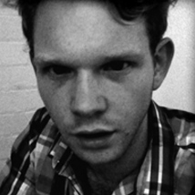
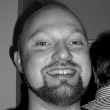
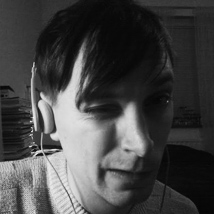

Protothon is a hackathon for creatives and coders seeking to invent the future of digital communication through creative collaboration.
This is our team
Joe CoppardPerched on the axis between art, advertising and education Joe Coppard has forged a unique path from the depths of London’s art scene to Stockholm’s digital heights via New York City. Forever focused on meaningful interactivity he has been director, entrepreneur, curator and creative running spaces and projects at his own nightclub, as director of a gallery, curator at Tate Britain, Whitechapel Gallery, ICA; creative at Mother London, Wieden+Kennedy and educator at University of the Arts London. He is currently associate Lecturer at Berghs School of Communication |
 |
|  |
Peter SvenssonPeter is the owner of Greener Grass Web Design, co-founder of the JavaScript/Mobile web dev training company Threefourteen, leader of the Stockholm Google Technology User Group and arranger of the yearly conferences Scandinavian Web Developer Conference, Android Only, Dyncon and Crash&Burn. He’s an expert in building the frontends of large, scalable web apps and moonlights with an exotic concept for rare talent recruitment. You should totally know this guy. |
Clara TerneGraphic designer and illustrator. Her work is mostly digital, ranging from Cinema 4D to Photoshop. Currently Clara is collaborating with a programmer on the Varsalongen campaign at Liljevalks using the language of processing, is part of a team shortlisted to re-design the Swedish bank note and has been contracted to create visals for Telenor for a year. Repped by Nu Agency in Scandinavia and Rush Agency for the rest of the world. |
|
|  |
Johan NilssonJack Russel owner, open source contributor and hacker, Johan works as an web and android developer at IT-Huset. Has participated in several hackathons and is the author of the popular android app STHLM Traveling. |